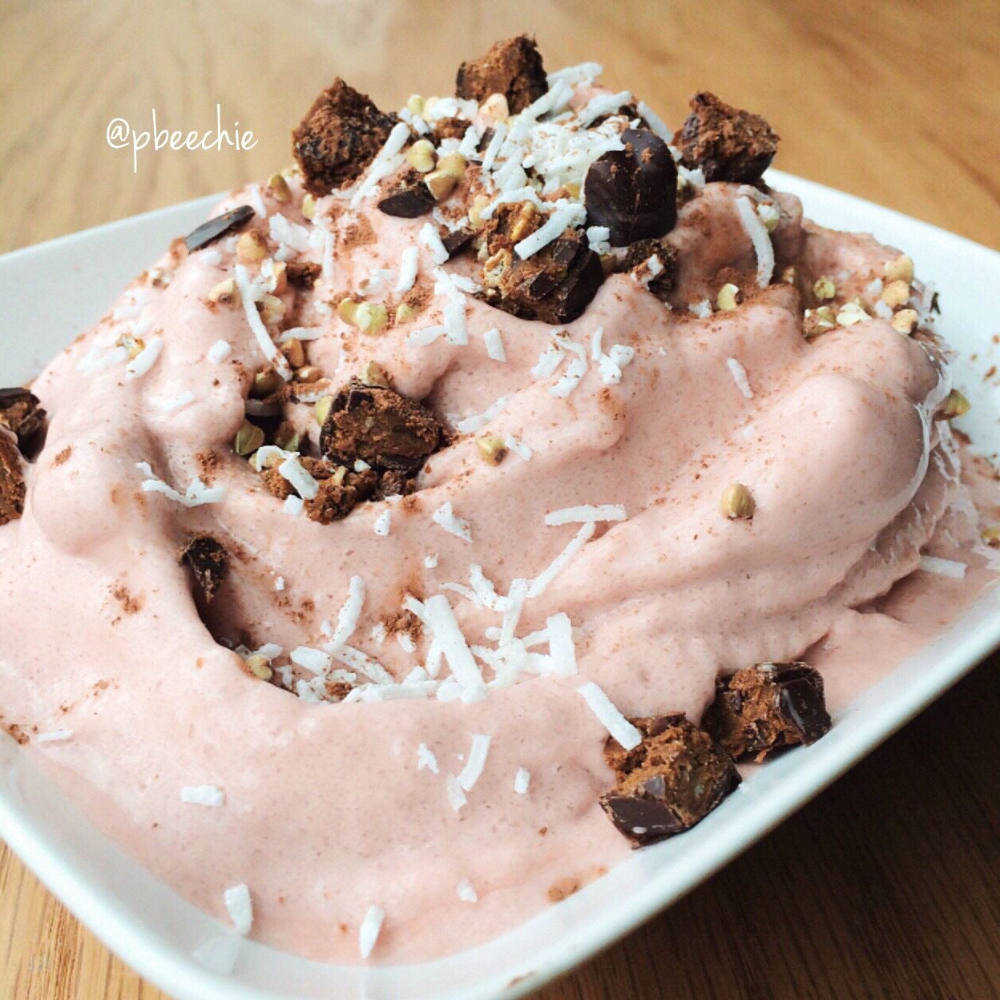

Red Velvet Protein Soft Serve

This week's meals, sponsored by the colors: pink & red. Clearly. But really. Red velvet protein soft serve ice cream topped with cocoa cherry square bars, unsweetened shredded coconut, and buckwheat groats (you knowww I love my crunchies). Nommm.
I was so excited for Valentine's Dinner this weekend. Jesse asked me where I wanted to eat 4-6 weeks ago, and I found this place that has a Kabocha Squash Tart O_O You know me and kabocha.. I needed it. I was so excited. The restaurant is in a village that is self-sustaining and kinda in the middle of nowhere. So we get ready and drive to dinner - and HOUR away.... I get there, hobbling on my crutches and everything... and the menu was preset for Valentine's day. Like. As in. They don't serve their normal menu. And the V-Day dinner was all stuff I wouldn't eat. I've been straying away from all meat except for the fatty fish needed for calcium & vitamin D to heal my foot, but the menu was ALL meat. AND it was $75 a person. So. We left. At 8:30 pm. On V-Day. With nowhere to eat. I was so sad because getting dressed/pretty and everything with my crutches is so hard, and I didn't want to have wasted my time. And I was hangryyyyy. But we ended up at a nice-ish sushi restaurant. It ended up being fun :) We sat at the sushi bar so food came out in like 4 minutes and the sushi chefs kept giving us extra free dishes :o since we were the only ones at the bar. Sushi is gooood.
Pretty face ON MODE - this never happens so yeah. I documented it. I miss my purple tips :( I've been lazy and haven't gotten them touched up. Soooooon though.
Jesse got me a dozen pretty roses, the CUTEST card with Nami on it (my fave league of legends champ) and a bunch of Nami puns, a sweet giraffe plushie with a baby version of it, and MASSAGE OIL. I am constantly in pain & have been seeing a rheumatologist/doctors for the problem. They're labeling it as fibromyalgia without knowing the true cause of those symptoms. But yeah..anyways. Point is. I'm always begging Jesse to massage "my spots" and get out the pain for me. So he got me massage oil :) so sweet. I used to wonder if the spots were just muscle soreness or a legitimate pain. I let it go for 6 months before seeing a doctor. Even then, the doctors doubted my pain, which made me begin to doubt myself. But now that I've been out of the gym for 4 weeks with my broken foot, I know the pain is legitimate. It's just as strong as when I was working out. Bah. Anyways. Massage oil. Yes.
Red Velvet Protein Soft Serve
Serves: 1
-
1 scoop red velvet cellucor protein
-
2/3 cup unsweetened almond milk
-
1 stevia packet
-
1 cup ice cubes (1 cup of water, frozen)
Blend everything in a blender! The longer you blend, the thicker it gets. You don't need a fancy blender; mine is a dinky $20 off-brand one. Optional, add 1/2 tsp xanthan gum to thicken, but my stomach doesn't do well with it anymore so I don't! Eat!